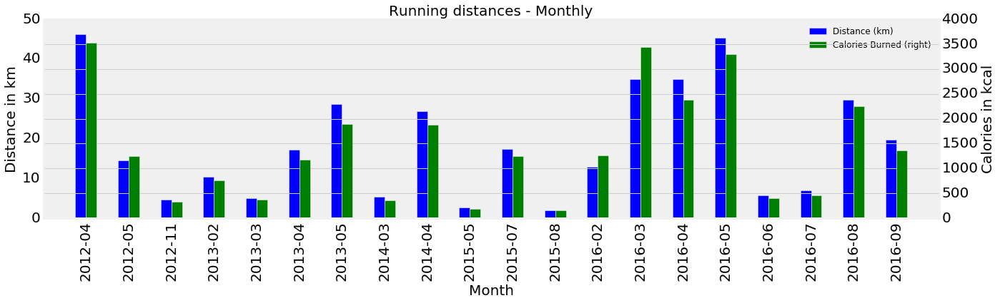
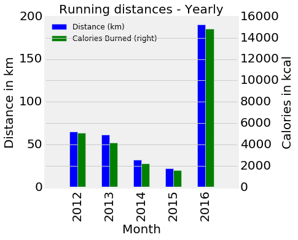
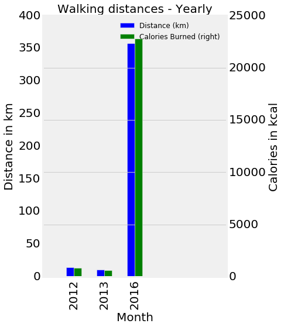
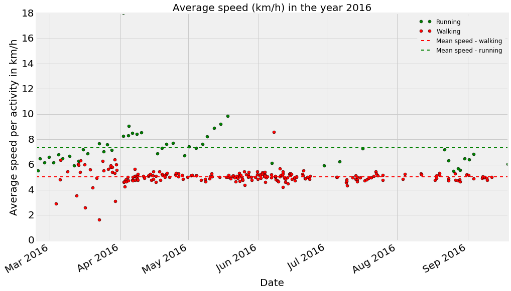
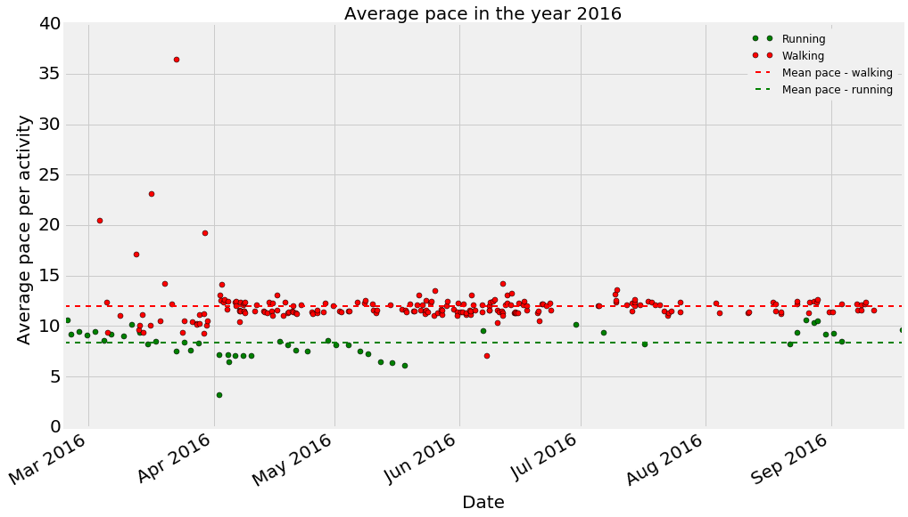
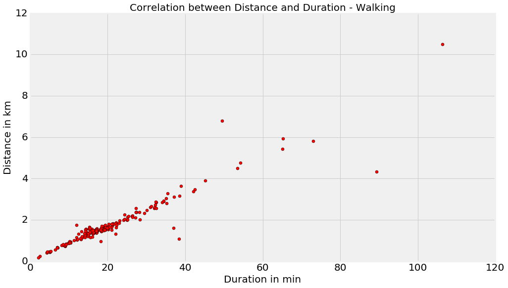
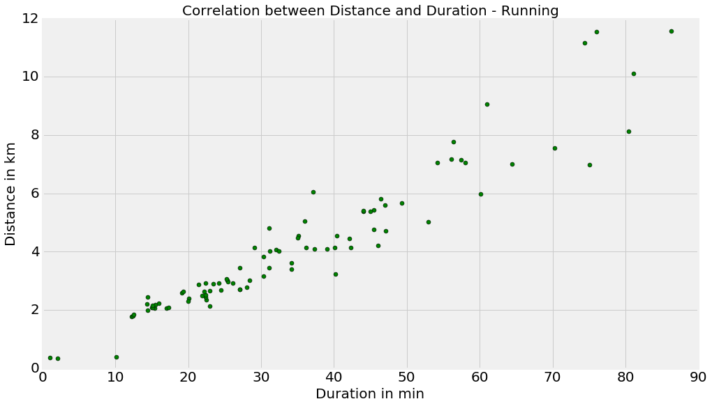

Runkeeper data Analysis
I took 4 years of my run keeper data and analysed it. The data was exported from my runkeeper profile.
#reading for data in to a DataFrame
df = pd.read_csv('cardioActivities.csv')
#Displaying the data frame
df.head()| Date | Type | Route Name | Distance (km) | Duration | Average Pace | Average Speed (km/h) | Calories Burned | Climb (m) | Average Heart Rate (bpm) | Notes | GPX File | |
|---|---|---|---|---|---|---|---|---|---|---|---|---|
| 0 | 2016-09-18 17:23:13 | Running | NaN | 8.13 | 1:20:47 | 9:56 | 6.04 | 526.000000 | 85.85 | NaN | Slow and good run. Perfect weather. | 2016-09-18-1723.gpx |
| 1 | 2016-09-11 16:21:14 | Walking | NaN | 1.55 | 18:31 | 11:58 | 5.01 | 89.975704 | NaN | NaN | Walking | NaN |
| 2 | 2016-09-09 19:52:37 | Walking | NaN | 1.36 | 17:09 | 12:37 | 4.75 | 84.963795 | NaN | NaN | Walking | NaN |
| 3 | 2016-09-09 14:46:07 | Walking | NaN | 1.51 | 18:29 | 12:15 | 4.90 | 89.021055 | NaN | NaN | Walking | NaN |
| 4 | 2016-09-08 14:53:21 | Walking | NaN | 1.48 | 17:45 | 11:58 | 5.01 | 88.066405 | NaN | NaN | Walking | NaN |
Some aggregated stats about running and walking
Number of total activities 312
Total distance 754.53 km
Total Calories burned 52214 Cal
Average distance per activity 2.45 km
Average Calories burned per activity 167 Cal
--------------------------------------------------
Number of walking activities 222
Total distance in walking 383.25 km
Average distance per walking activity 1.72635135135 km
Average Calories burned per walking activity 109 Cal
--------------------------------------------------
Number of running activities 90
Total distance in running 371.28 km
Average distance per running activity 4.12533333333 km
Average Calories burned per running activity 308 Cal
--------------------------------------------------
Monthly walking distance and calories burned for 4 years. Looks like I have ran more often during this year.

Monthly running distances and calories burned for 4 years.

Yearly walking distances and calories burned for 4 years.

Yearly running distances and calories burned for 4 years.

Average speed per activity during this year(2016). Average speed per activity is calculated by dividing the total distance in each activity by the duration it took to complete the activity.
Average pace per activity during this year(2016). Average pace is average number of minutes takes to complete each kilometer in an activity

Correlation between distance and duration for all walking activities. It can be seen that there is high correlation as it is very likely that longer I walk, more distance I cover.

Correlation between distance and duration for all running activities. We can see good correlation but not as strongly like in walking. It is because longer I run, more difficult it might become to maintain the speed and hence the distance.
